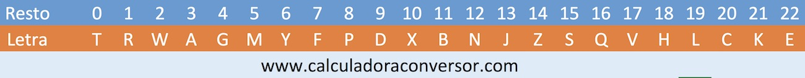

Ejercicios
-
Crea un array de números donde le indicamos por teclado el tamaño del array, rellenaremos el array con números, al final muestra por pantalla el valor de cada posición y la suma de todos los valores.
Recuerda que para capturar un evento hay que almacenarla en una variable. Posteriormente utilizaremos el método preventDefault() del evento que cancela el evento si este es cancelable.
document.querySelector("#ej1").addEventListener("click",e=>{ e.preventDefault(); //el resto del código aquí }); - Crea un array de números de un tamaño pasado por teclado, el array contendrá números aleatorios, por último nos indica cual es el mayor de todos.
- Modifica el ejercicio anterior pero utilizando números aleatorios. Puede que te interese esta función:
// Retorna un entero aleatorio entre min (incluido) y max (excluido) // ¡Usando Math.round() te dará una distribución no-uniforme! function getRandomInt(min, max) { return Math.floor(Math.random() * (max - min)) + min; } -
Pide al usuario por teclado una frase y pasa sus caracteres a un array de caracteres. Puedes utilizar métodos o no de String.
- charAt()
- push()
-
Calcula la letra de un DNI, pediremos el DNI por teclado y nos devolverá el DNI completo.
Para calcular la letra, cogeremos el resto de dividir nuestro DNI entre 23, el resultado debe estar entre 0 y 22.Haz un método donde según el resultado de la anterior formula busque en un array de caracteres la posición que corresponda a la letra.Por ejemplo si escribimos: 32670089 nos devolverá: 32670089SEsta es la tabla de caracteres: 